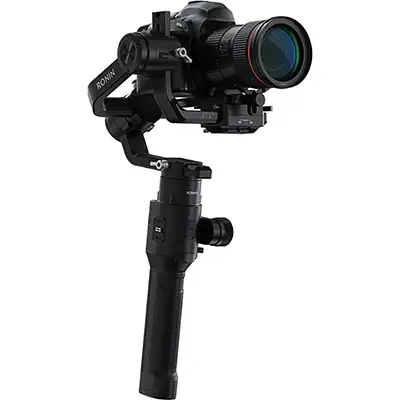

Audio/Photo/Video Equipment

Ronin S
Ronin-S understøtter næsten alle DSLR og spejlløse kameraopsætninger på markedet, så du kan nyde direkte kamerakontrol. Et sæt automatiske funktioner er tilgængelige i DJI Ronin appen, så du kan overkomme forhindringer. Ronin-S kamerastabilisatoren understøtter tilføjelser som mikrofon, LED-lys eller en ekstern skærm.